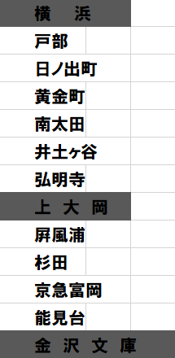
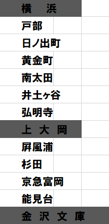

Yokosuka city transportation app
| 駅名 | 駅番号 | 駅名 | 駅番号 |
|---|---|---|---|
| 浦賀 | kk64 | 横浜 | kk42 |
| 馬堀海岸 | kk63 | 神奈川 | kk41 |
| 京急大津 | kk62 | 京急東神奈川 | kk40 |
| 堀ノ内 | kk61 | 神奈川新町 | kk39 |
| 県立大学 | kk60 | 子安 | kk38 |
| 横須賀中央 | kk59 | 京急新子安 | kk37 |
| 汐入 | kk58 | 生麦 | kk36 |
| 逸見 | kk57 | 花月総持寺 | kk35 | 安針塚 | kk56 | 京急鶴見 | kk34 | 京急田浦 | kk55 | 鶴見市場 | kk33 | 追浜 | kk54 | 八丁畷 | kk32 | 金沢八景 | kk53 | 京急川崎 | kk31 |
| 金沢文庫 | kk52 | 六郷土手 | kk30 |
| 能見台 | kk51 | 雑色 | kk29 |
| 京急富岡 | kk50 | 京急鎌田 | kk28 |
| 杉田 | kk49 | 梅屋敷 | kk27 |
| 屛風ヶ浦 | kk48 | 大森町 | kk26 |
| 上大岡 | kk47 | 平和島 | kk25 |
| 弘明寺 | kk46 | 大森海岸 | kk24 |
| 井土ヶ谷 | kk45 | 立会川 | kk23 | 南太田 | kk45 | 鮫洲 | kk22 | 黄金町 | kk44 | 青物横丁 | kk21 | 日ノ出町 | kk43 | 新馬場 | kk20 | 北品川 | kk02 | 品川 | kk01 |